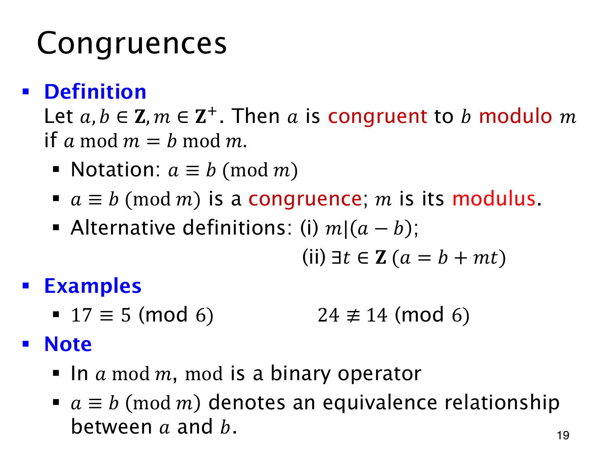

L1.12 · 第 19 页讲解原文
查看这一页课件

同余比较的是余数
17≡11(mod6) 成立，因为两个数除以 6 都余 5。这里的 11 无需是标准余数；若写取模运算，则只能写 17mod6=5。
设 a,b∈Z，m∈Z+。当 amodm=bmodm 时，称 a 与 b 模 m 同余，记为
a≡b(modm).
m 称为 modulus（模数）。同一关系还可写成 m∣(a−b)，或写成存在整数 t 使 a=b+mt：两个数之间相差若干个完整的模数。
所以 17≡5(mod6)，既可看出两者都余 5，也可检查 17−5=12 被 6 整除。相反，24≡14(mod6)；它们余数为 0、2，差 10 也不是 6 的倍数。
amodm 是返回一个整数的二元运算，而 a≡b(modm) 是有真假的关系命题。同余具有自反性、对称性和传递性：每个数与自己同余；关系能反向；a,b 余数相同且 b,c 余数相同，便有 a,c 余数相同。因此它是等价关系，可以据此将整数按余数分类。